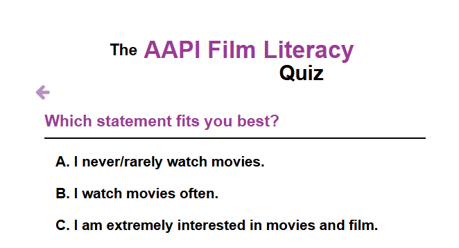
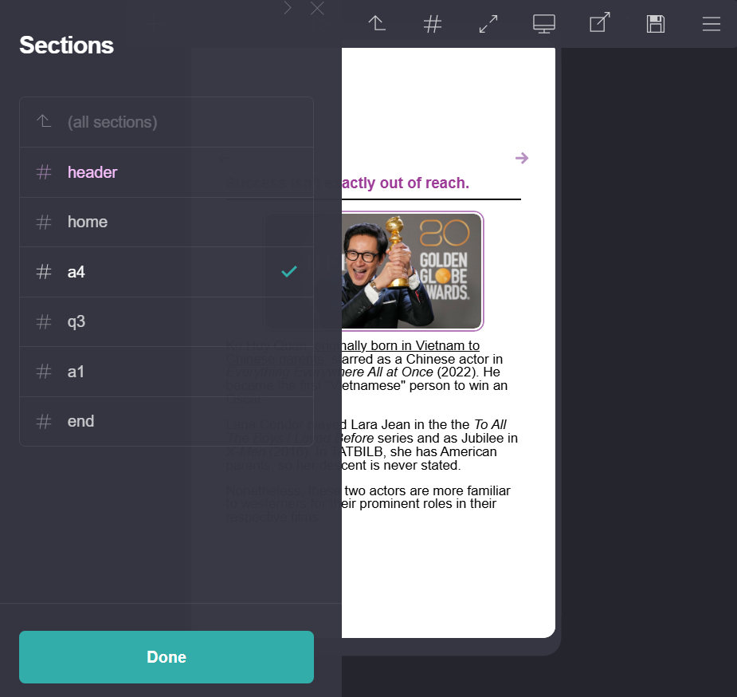
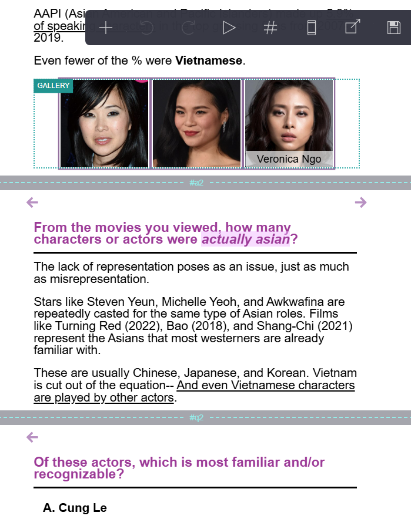

Question and Answer System on Website Page:


Sectional Division on Carrd:
 
I created a simulation of an online quiz and informational blog to study the audiences of films with AAPI or Asian American Pacific Islander references and actors. Using travel buttons in the built-in HTML, reversal of each option and quiz choice is possible through different sections, while remaining on the same page.
Skills I Learned
- Semantic HTML
- Markdown syntax
- Content organization